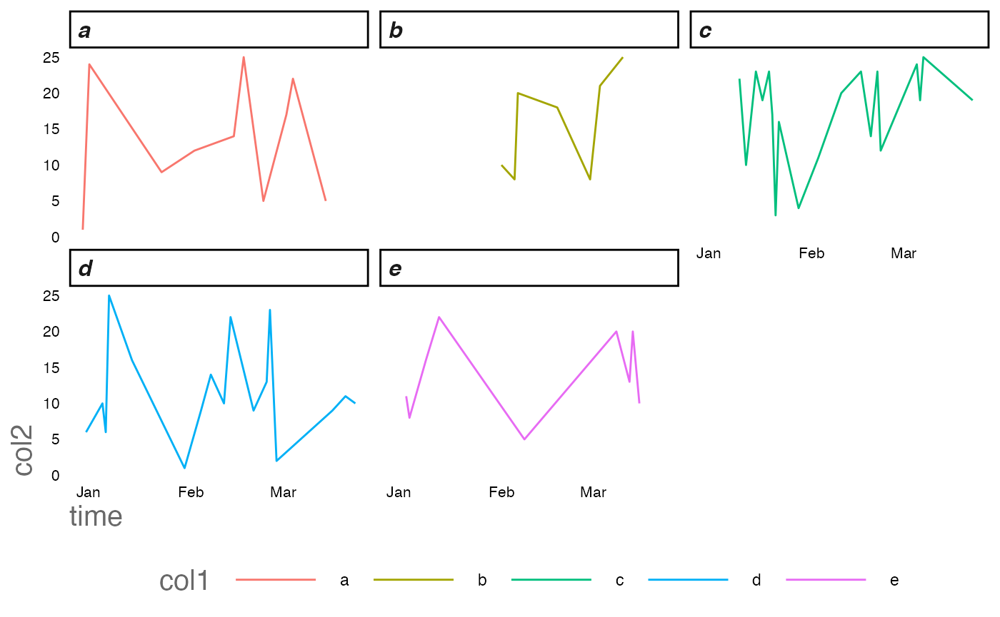
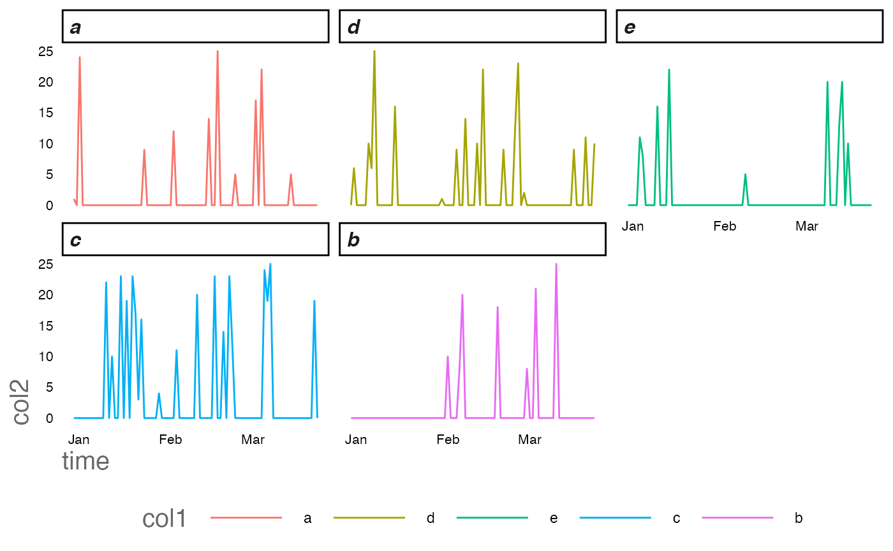

time.Rmd
library(RShinyHelpers)The temporal functions aim to complete missing time series data to ensure functions like window functions like rolling averages and auto regressive algebra are represented correctly.
For a variety of reasons, dates may not be present, distinctly different from being present and their values having NA or null. Such instances shouldn’t really exist, but instead be explicitly mark data as missing or zero on that time stamp.
Construct a clean time series with some variables and take out random dates to see how a real life example might look.
require(ggplot2)
require(dplyr)
# construct a time series
ts <- as.Date("2022-01-03"):as.Date(Sys.Date())
#sample some dates of the original so its 'patchy'
ts <- sort(
as.Date(
ts[sample(c(TRUE,FALSE),size = 101,replace = TRUE,prob = c(0.7,0.3))],
origin='1970-01-01')
)
#generate a corresponding factor alongside
df <- data.frame(time=as.Date(ts),
col1=sample(replace=TRUE,letters[c(1:5)],size=length(ts)),
col2=sample(replace=TRUE,1:26,size=length(ts))
)The output from our patchy data.frame will look something like this. Note the missing dates.
Also perhaps not evident is that not all factors are represented for every timestamp.
| time | col1 | col2 |
|---|---|---|
| 2022-01-03 | a | 1 |
| 2022-01-04 | d | 6 |
| 2022-01-05 | a | 24 |
| 2022-01-07 | e | 11 |
| 2022-01-08 | e | 8 |
| 2022-01-09 | d | 10 |
| 2022-01-10 | d | 6 |
| 2022-01-11 | d | 25 |
| 2022-01-13 | e | 16 |
| 2022-01-14 | c | 22 |
Our strategy for dealing with raw data like this is similar to
expand.grid in base R - but in expand.grid the algorithm
does not infer missing dates from the time series our function does
!!
Repair the time series using the complete_time_factors
from RShinyHelpers
new_df <- complete_time_factors(df)Now observe the difference in window operations but computing a simple lagged difference between two time periods.
operates on consecutive time differences without considering the nature of non present dates
df%>%
dplyr::count(time,wt=col2)%>%
dplyr::mutate(n-lag(n,1))%>%head(10)
#> time n n - lag(n, 1)
#> 1 2022-01-03 1 NA
#> 2 2022-01-04 6 5
#> 3 2022-01-05 24 18
#> 4 2022-01-07 11 -13
#> 5 2022-01-08 8 -3
#> 6 2022-01-09 10 2
#> 7 2022-01-10 6 -4
#> 8 2022-01-11 25 19
#> 9 2022-01-13 16 -9
#> 10 2022-01-14 22 6while the completed timeseries displays the correct lagged difference with the dates filled out.
It is noted that the in the improved strategy for dealing with italics{complete time series that now that every date timestamp is defined, each also has a value attached to it - notably some of these values are non- trivial as other datetimes are present ond non zero.
new_df%>%
dplyr::count(time,wt=col2)%>%
dplyr::mutate(n-lag(n,1))%>%head(10)
#> time n n - lag(n, 1)
#> 1 2022-01-03 1 NA
#> 2 2022-01-04 6 5
#> 3 2022-01-05 24 18
#> 4 2022-01-06 0 -24
#> 5 2022-01-07 11 11
#> 6 2022-01-08 8 -3
#> 7 2022-01-09 10 2
#> 8 2022-01-10 6 -4
#> 9 2022-01-11 25 19
#> 10 2022-01-12 0 -25Plotting is similarly improved. The patchy timeseries below is implicitly filled along the x axis as ggplot is intelligent enough to recognise a datetime variable. However the factors are still linearly interpolated.
ggplot2::ggplot(df)+
ggplot2::geom_line(ggplot2::aes(time,col2,col=col1))+
ggplot2::facet_wrap(~col1)+
RShinyHelpers::custom_theme()
ggplot2::ggplot(new_df)+
ggplot2::geom_line(ggplot2::aes(time,col2,col=col1))+
ggplot2::facet_wrap(~col1)+
RShinyHelpers::custom_theme()
Data is represented more fairly - particularly in this instance representing its sparsity better with our improved regime.